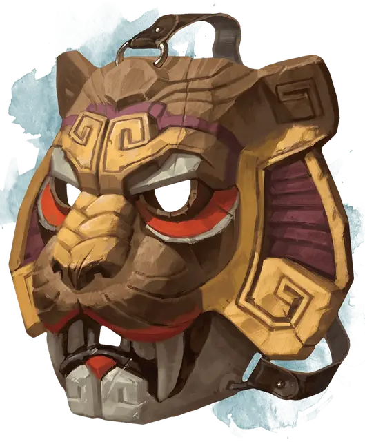

Маска зверя
Mask of the Beast
Чудесный предмет, необычный

Рекомендованная стоимость 101-500 зм
Эта деревянная маска изображает голову животного и имеет 3 заряда. При ношении маски вы можете потратить 1 заряд и использовать маску, чтобы действием наложить заклинание дружба с животными [animal friendship]. Маска восстанавливает все потраченные заряды на рассвете.